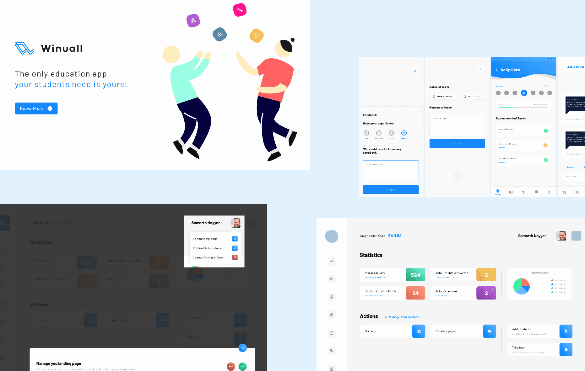
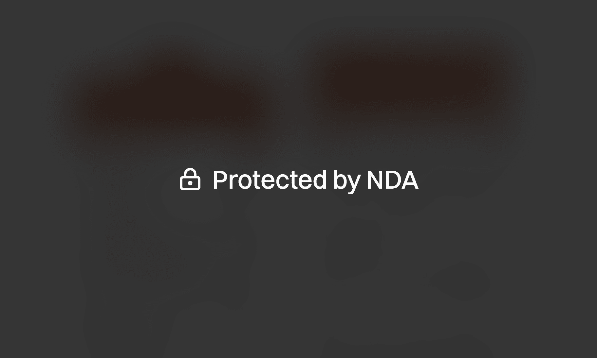
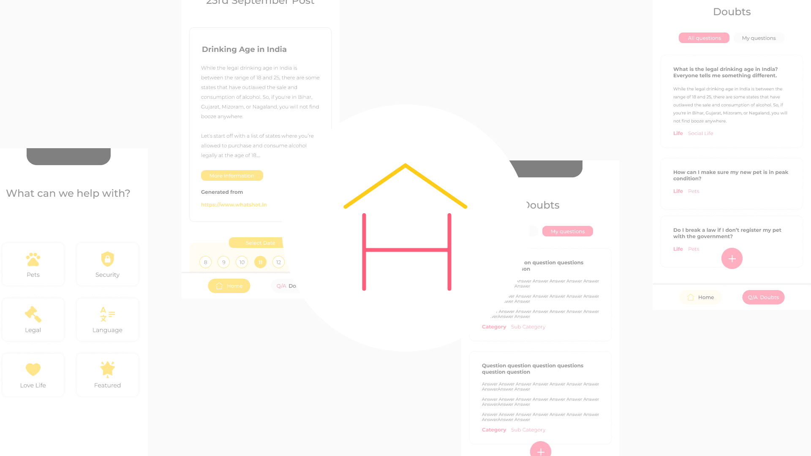
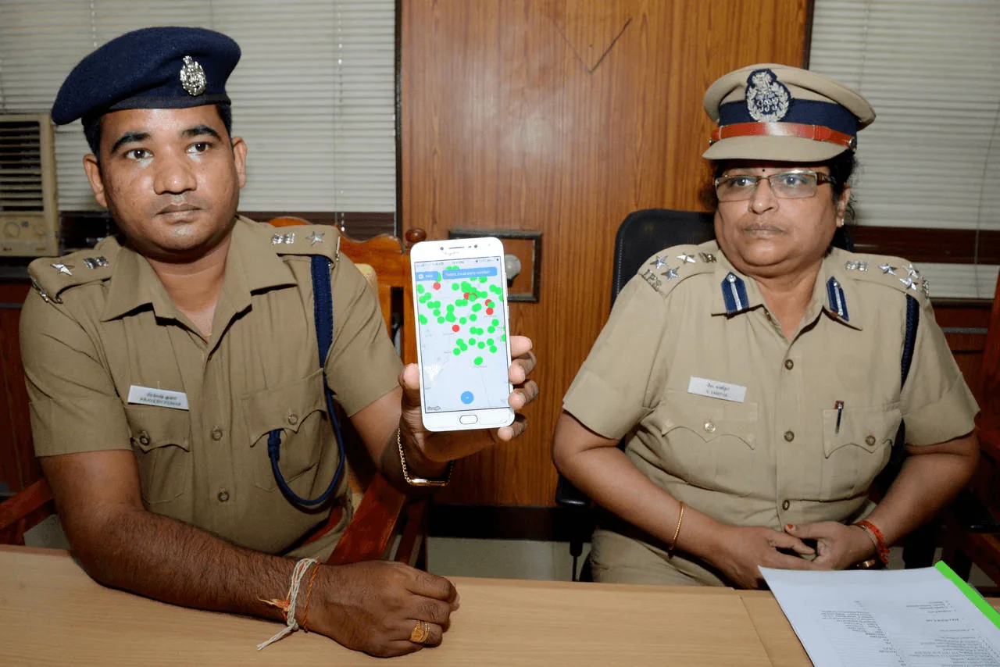
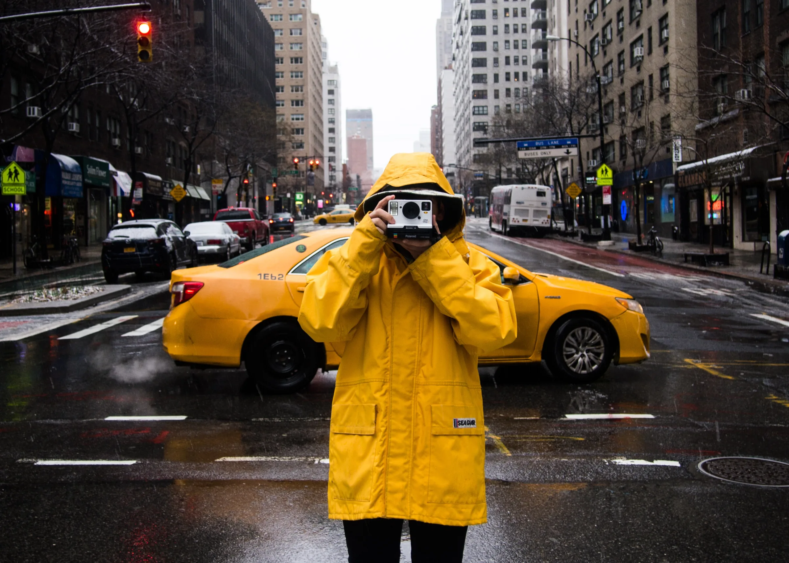
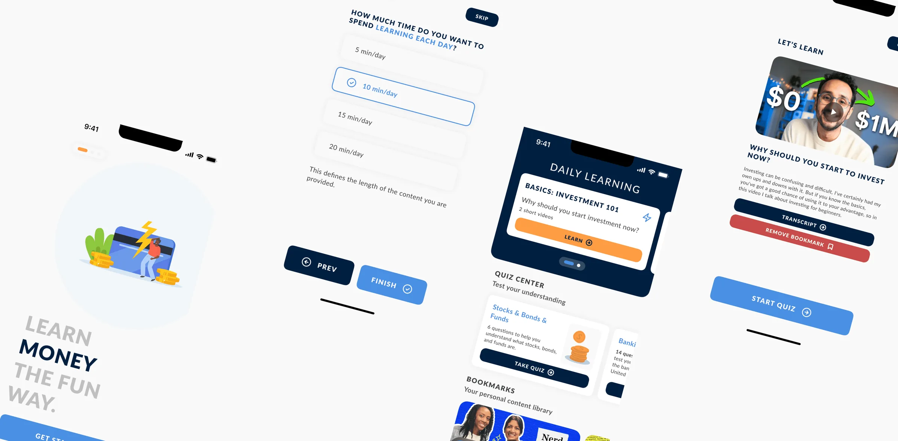

(01)
AI Native Design System
Pitch demos were rebuilt from zero every time. As the sole designer, I built the system behind $500M+ in deals.
Design SystemsAI-assistedUX DesignResearch
Open
Pitch demos were rebuilt from zero every time. As the sole designer, I built the system behind $500M+ in deals.
COVID wiped out live events. As lead designer on the pivot, I helped reach 50,000+ paying users in month one.


Users were leaving for Google Pay's chat. I designed pay-first chat for 100M+ users: drop-off fell from 34% to 12%.


Teens had no safe place to ask about growing up. As the only designer, I built an anonymous Q&A app for an NGO.
Bus bookings dropped at checkout. I redesigned the flow: 72% faster checkout, 34% lower drop-off.

Voters didn't know where or whether to vote. I ran field research and designed the app, deployed in 3 districts.


Young people avoid learning about money. 12 interviews and 3 rounds of testing turned a board game into a quiz app.

Five alarms, one intention: get me up. I designed alarm groups with one switch each: 1,000+ downloads.

Does "faster horses" hold up? I designed and ran an 8-person study and wrote the paper.
Open